| О боккенах… покупка... самостоятельное изготовление... уход. |
| Боккены бывают разные… немного живой истории |
| Первый боккен у меня появился в 1995 году. Он был просто необходим для моего преподавания айкидо… делали его на оборонном заводе и вытаскивали в штанине. Смех и грех. Форма у него была достаточно экзотической, с острыми гранями ребер. Изгиба практически не было. Выточили его из бука. Изгиб ему я пытался придать размачивая, выгибая и высушивая под прессом. В результате изгиб регулярно уходил, но это был первый бокен. Об него сломано было множество последующих самоделок. И прожил он почти 13 лет. Жаль фото не сохранилось. |
| С 2002 года в процесс тренировок Саратовской федерации айкидо органично была включена работа с оружием. И появилась необходимость в массовом приобретении боккенов. Задачу решили в лоб. Нашли краснодеревщика, дали ему чертеж, сделали заказ. Сделали штук 20. Материал – граб, грани формировались фигурной фрезой для снятия фасок. Хорошие боккены. Часть жива до сих пор. Слабым местом оказались зауженные носики. При контактной работе они были сломаны у ВСЕХ боккенов этой партии. К сожалению, краснодеревщик исчез из Саратова, и больше найти исполнителя для столь экзотического заказа в нашем городе не удалось. |
|
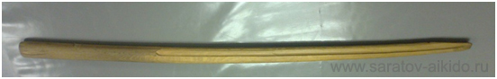
Боккен первой партии |
|
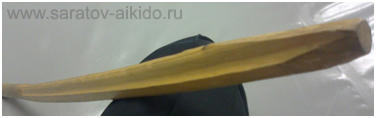
Фаска снятая фигурной фрезой и сколотый носик |
| В 2004 попробовали изготовлять боккены сами. Благо с банкротящегося деревообрабатывающего предприятия удалось изъять букового бруса примерно на 20-30 боккенов. Изготовление одного занимало около 3-4 часов у 2-х человек. Электрофуганком заготовке придавалась форма, которая потом доводилась рубанком и напильниками. После была шлифовка. Соответственно параметры изгиба, длинны и толщины менялись. О том, каков был технологический процесс, чуть ниже. Потом заготовки кончились, ну и производство замерло. |
| Оказалось в Саратове практически невозможно найти качественную древесину. Компромиссный вариант по привозке материала сюда и самостоятельному изготовлению потерпел крах. Работать с ценной и твердой древесиной никто не берется, а если и берется, то себестоимость изготовления слишком высока. Изготовление штучных экземпляров, различных по качеству и форме погоды не делает. Электроинструмент горит, а ручная работа дорога. |
|
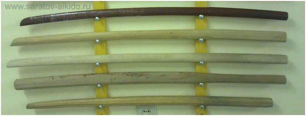
Снизу вверх: 1 - боккен из первой партии. 2 - субурито из бука. 3 и 4 - «разовое» исполнение боккенов из привозного граба, 5 - бокен из «красного» дерева, в Москве в одном из магазинов цена подобных экземпляров 8-15 тысяч р., с надписью «ручная работа», как будто остальные боккены делают ногами. Мы покупали по 800 р. Примерно соответствуют грабовым. |
| Стали покупать бокены оптом в Москве. Было несколько партий разного качества. Но кататься в столицу на семинар и таскать с собой связку из 5-10 боккенов очень неудобно. |
| Потом в городе стали попадаться в сувенирных магазинах боккены не известного производителя. Материал – не известен, качество – не предсказуемое. Цена примерно в 2 раза ниже, чем мы закупали. Махать нормально, но для контактной работы не лучший вариант. Собственно как и буковые боккены из спортивных магазинов. |
|
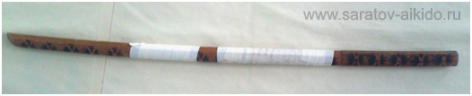
Бокен из сувенирного магазина с декоративной обработкой выжиганием |
| Последний вариант – это заказы через интернет. Материал японский белый и красный дуб. Изготовитель - обещают Японию. Качество приемлемое. Цена выигрывает из-за большого заказа и экономии на доставке. |
| Как бюджетный вариант остается черенок от мотыги. Это конечно не боккен. И даже не дзе. Ну хотя бы по тому, что невозможно найти не кривой и нормально просушенный вариант. И в 100% через месяц или два, черенок пойдет винтом. Но по соотношению цена – качество – живучесть аналогов нет. Выбирать надо из березы, без сучков и трещин обрезать по длине, отполировывать один край на расстоянии 30 см, а всю остальную длину обматывать в один слой скотчем. Чтобы когда палка разлетится, осколков было меньше. |
|
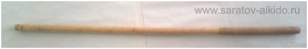
Березовый черенок от мотыги. Уникальный образец. Жив уже 4 года. Об него сломано несколько боккенов. Живучесть остальных подобных экземпляров 1-6 тренировок. |
|
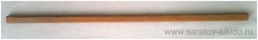
Суррогат боккена из «мебельной перекладины». Бук |
|
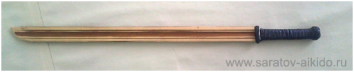
Смешной боккен из плинтуса. Елка |
|
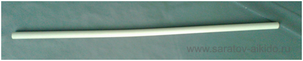
Суррогат боккена. Обрезок металлопластиковой толстостенной трубы. Халявный вариант боккена из ПВХ и текстолита. |
|
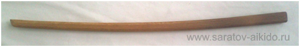
Боккен из «есинкановской» группы. Большой заказ. Нормальная форма. Все портит отвратная отделка, заминающееся и сучковатое дерево. |
| Пробовали работать с клееным бамбуковыми боккеном. Общее впечатление не плохое. Он несколько легче обычного и более упруг. Но слишком сильно заминается. Не лучший вариант для контактной работы. Возможно, неплохо подойдет для детей и подростков. |
| Пока еще в нашей федерации не тестировались боккены из не традиционных материалов. ПВХ и текстолита. Ничего не могу сказать ни хорошего, ни плохого. Кроме общих размышлений. ПВХ или в привычных терминах - полиэтилен. Тот самый, из которого делают пленку. Обычно черного цвета. Хотя для технологического процесса все равно, в какой цвет окрашивать массив полимера. В зеленый, например, или красный. Я предполагаю, что при контактной работе достаточно быстро потеряет товарный вид. Наверняка будет подкрашивать чужие бокены при контакте. Ну и текстура рукояти – не лучшая. В потной ладони будет скользить. Что касается текстолита, то из-за высокой плотности, боккен обычного вида будет крайне тяжел. Придется менять его форму. Делать уже и тоньше. Ну и внешний вид конечно… Резюме - наверняка подобная продукция найдет своего потребителя. Хотя лично мне не нравиться. |
| Самостоятельное изготовление бокенов |
| Прежде всего нужно определиться, для чего вам нужен бокен. Для того чтобы висеть на стенке (например как подарок) , для субури и без контактной работы (как вариант для ролевых игр), или для контактной работы. Исходя из потребностей - нужно выбирать материал. В первых двух вариантах - боккены вечные. И из чего они сделаны, не имеет значения. В последнем варианте боккены - расходный материал. И для продления его жизни при изготовлении нужно выбрать твердую и плотную древесину. |
| Все что растет в средней полосе России и широко доступно - не подходит. Береза заминается, а дуб только обрабатывать тяжело. При контактной работе он слоиться. Более мене доступны дары природы нашего юга. Это бук и граб и, возможно, груша (причем именно южная, из-за особенностей грунтов она плотнее, чем местная). Предпочтение конечно грабу. Он и плотнее, и красивее. Хотя обрабатывать его намного сложнее. Обычный высоко оборотистый электроинструмент не справляется. Фрезы накаляются, граб горит, но упорно сопротивляется обработке. Идеально если брус будет из зрелого дерева. И из массива, ближе расположенного к плотным внешним слоям, чем к рыхловатой сердцевине. Но по факту вы делаете из того что имеете. |
| Ну и собственно наш опыт самостоятельного изготовления боккенов. |
| Из инструментов у нас была электрофреза. Несколько напильников и рубанков, метровая гибкая железная линейка, «шкурка» различной зернистости. |
|
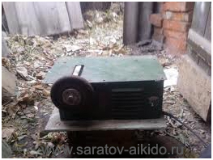
Электрофреза |
| У нас был образец боккена, и мы разработали методологию воспроизводства исходного образца подручными средствами. |
| 1) Сначала нужно подготовить брус. Длинна 100-120 мм высота 50-60 мм толщина 35-45мм. Потом делали боковую разметку. Как шаблон прикладывали исходный бокен. |
| 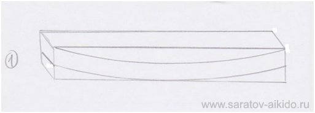 |
| Максимальная глубина выборки зависит от ваших предпочтений. Те от того с какой кривизной вы хотите получить боккен. Как правило, максимальная ее глубина около 15-25 мм. Ее делаем электрофрезой. Стараясь сохранить параллельность граней. В теории кривизну исходной заготовки можно задать размачивая и выгибая ее под прессом, с последующей сушкой. Это позволит избежать наклонного залегания слоев древесины в ударной зоне. Соответственно боккен будет прочнее. Но такая процедура сильно усложнит процесс и увеличит сроки изготовления до неприличия. Поэтому основную массу боккенов не гнут, а вытачивают по лекалу. |
| 2) Далее железной линейкой размечаем некую конусность заготовки. Те самая толстая часть в месте перехода лезвия в рукоятку. 25-30 мм. С сужением к кончику. Его толщина 22-24 мм. Рукоять можно оставить ровной, длинной 300 мм. Мы же делали ее с небольшим сужением к концу. С 25-30 мм до 23-28 мм. Электрофрезой, соблюдая перпендикулярность относительно верхней и нижней граней, снимали лишнее. |
| 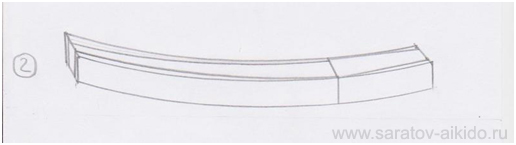 |
| 3) Дальше ответственный момент. Еще раз делали разметку линейкой. Нужно придать верхней части заготовки трапецеидальную форму. На боковых гранях отступали 15-20 мм от верхнего края. А вот вверху снова получалась небольшая конусность. У рукояти ширина спинки 7-10 мм, у кончика 4-7 мм. Электрофрезой выводили грани. Стараясь соблюдать симметричность. |
| 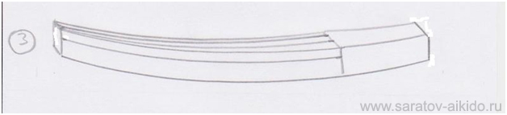 |
| 4) Следующий этап: электрофрезой скруглялась рукоять и нижняя часть заготовки .Так чтобы в сечении рукояти получался овал, а в сечении лезвия - овал с трапецией сверху. |
| 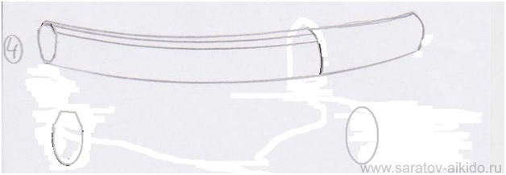 |
| Исходная форма готова. Мы еще формовали носик боккена. Но можно оставить и так. Далее шла чистовая обработка. Рубанками сглаживались ненужные грани. Напильниками придавалась окончательная форма, и в финале все шкурилось и полировалось. Получалось примерно следующее (это грабовый боккен, но технология та же): |
|
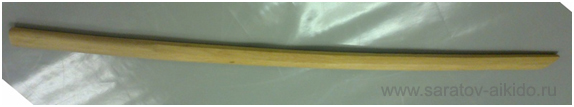
Общий вид |
|
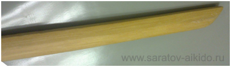
Носик |
|
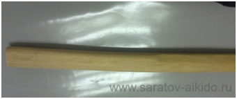
Рукоять. Четко видна граница между «лезвием» и рукоятью |
| 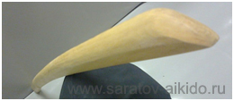 |
| Преимущества самостоятельного изготовления - это то, что можно сделать оружие «под себя». С длинной, кривизной лезвия, толщиной рукояти и прочими параметрами. Если есть место для работы, свободное время, инструмент и материал – то это вполне разумная альтернатива покупке. |
| Купить приличный боккен в Саратове |
| Пожалуй, такое приобретение можно сделать только через интернет или у нас. У нас чуть дешевле (из-за доставки крупной партии) и есть выбор из нескольких экземпляров. Если Вы заинтересованы в покупке, отпишитесь на sar-aikido@yandex.ru |
|
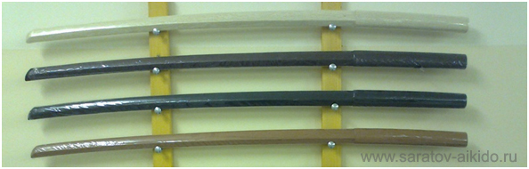
Образцы того что у нас есть. Снизу вверх. 1 – японский красный дуб, 2 и 3 покрашенные боккены для субури , 4- японский белый дуб. Все боккены в «пленке» |
|
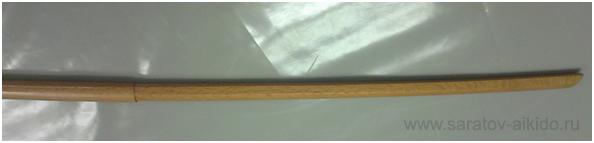
Общий вид. Японский красный дуб |
|
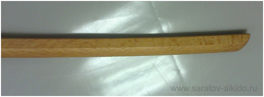
Текстура дерева. Как перламутр |
| Уход за боккеном |
| Прежде всего боккен - это изделие из дерева. И требует соответствующего ухода. После того как вы сняли пленку, бокен неплохо защитить от пересыхания. Варианты разные. От пропитки льняным или другими маслами до банальной натирки парафином. Последний самый простой. Обычной свечкой накапайте парафин на бокен и шерстяной тканью втирайте его по всей его длине, кроме рукояти. Повторяйте процедуру раз в полгода. Покрывать лаком бокен не нужно. При контактной работе лак потрескается и потеряет свои защитные свойства и испортит внешний вид. |
| Нельзя надолго оставлять бокен у отопительных приборов (над батареей или рядом с ней) и на солнце. Его обязательно поведет пропеллером. |
| Нельзя оставлять бокен для контактной работы в машине в морозы ниже 10 градусов. Несколько циклов заморозки–разморозки сделают его хрупким (посмотрите на «весенний» асфальт). |
| Если на боккене образовались незначительные сколы и небольшая щербатость, его до некоторой степени можно восстановить, зашкурив и заполировав поврежденное место. Ну и последнее: любой боккен рано или поздно ломается. Это его судьба. Практически любой сломанный боккен можно использовать, соединив обломки и обмотав его в 2-3 слоя скотчем. Контактно им работать уже, пожалуй, не стоит, а вот для субури он еще вполне сгодиться. Особенно если вас не напрягает его внешний вид. Главное не впадать в крайности не обматывать его большим количеством слоев. Тогда он становиться похож на гибкую колбасу из скотча… |
| Наш партнер в приобретении учебного оружия http://equipsport.org/ |